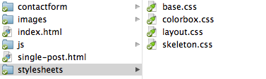
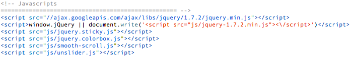
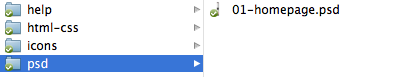

Restart - Portfolio HTML Template
About the File
Offset is a HTML portfolio template, perfect to promote your work.
Basic HTML/CSS knowledge is required to edit and use the template.
- Responsive
- Colorbox
- Built with Skeleton Grid System
- Working contact form
- PSD file included
- Extra icons included
Donwload Contents:

help - this file that you are reading now
html_css - all HTML, CSS, JS and PHP files
icons - extra icons
psd - Photoshop files for further customization
Table of Contents
1. HTML Structure
This theme was built with the help of the Skeleton Grid System.
Open the html-css folder and your will find all HTML, CSS, JS and PHP files that you'll need to costumize and add your content.
2. CSS Files and Structure
This template uses several CSS files.
base.css - a CSS file with generic styles and a reset to control the differences in the default behaviour of the different browsers.
colorbox.css - used by the Colorbox plugin.
layout-blue.css - blue version, this is the one you'll want to edit to change colors, images and fonts.
layout-pink.css - pink version, this is the one you'll want to edit to change colors, images and fonts.
layout.css - cyan version, this is the one you'll want to edit to change colors, images and fonts.
skeleton.css - this is used by the Skeleton Grid System, you don't need to edit nothing here.
The layout.css is separated into sections using:
If you would like to edit a specific section of the site, simply find the appropriate label in the CSS file, and then scroll down until you find the appropriate style that needs to be edited.
3. Javascript
This template imports the following javascritp files, that can be found in the bottom section of the HTML pages:
jquery.min.js - is a javascript library that greatly reduces the amount of code that you must write.
jquery.sticky.js - used by the sticky nav bar.
jquery.colorbox.js - Colorbox plugin.
smooth-scroll.js - enables smooth scrolling.
unslider.js - used by the sliders in the work section
4. Contact Form
For the contact form to work you'll need to open the file contactform.config.php located in the folder contactform -> inc, and add your email address in the respective field.
5. Photoshop Files
A full layered and organises PSD file is included.
You will need a basic understanding of the Photoshop software to edit and customize it.
Don't forget, always save for web, and when copying something hide the background and save as transparent png24.
6. Fonts
The fonts used in this template are from Google Web Fonts:
Archivo NarrowOpen Sans
The fonts are automatically loaded from the google fonts server.
You only need to download this for use on the Photoshop file.
7. Icons
In the icons folder you can find some extra icons for the Services section.
They were made using iconSweets.
Need Help?
You can contact me here:
info@rodrigob.com
Themeforest profile
twitter.com/rcb80